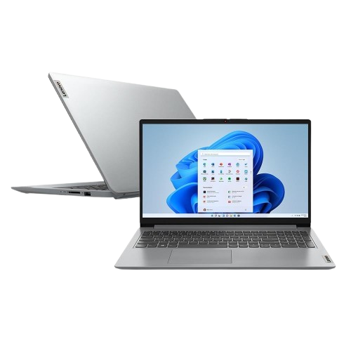

Notebook IdeaPad 1i (15”, Intel)
R$ 2.150,99
Especificações
Processador: Até Intel® Core i7
Sistema Operacional: Windows 11 Home | Linux
Gráficos: Intel® integrados
Tela: 15,6″ HD (1366x768) TN, 220 nits, 45% NTSC
Memória: Até 16 GB
Armazenamento: SSD M.2 PCIe QLC até 512 GB
Bateria: 3 células, 42 Wh
Câmera: HD 720p
Cor: Cinza
Conectividade: Wi-Fi 6 (2x2 802.11ax) | Bluetooth 5.0
Áudio: 2 alto-falantes 1,5 W com Dolby Audio™ + microfone duplo
Peso: ~1,6 kg
Dimensões: 17,9 mm x 360,2 mm x 236 mm
Portas/Slots: USB-C 3.2 Gen 1 | USB-A 3.2 Gen 1 | USB-A 2.0 | HDMI | Leitor de cartão SD | Combo fone/mic